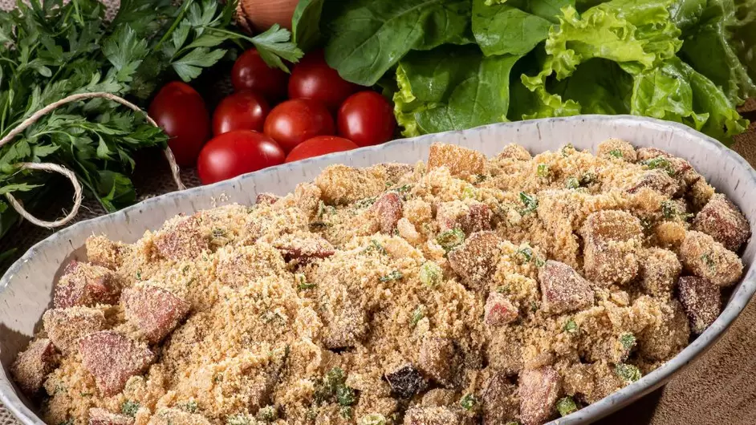

Farofa

Delicioso farofa para acompanhamento
Se arroz e feijão são as estrelas do almoço de hoje, um bom acompanhamento fará toda a diferença. Não tem como errar com essa dupla tradicional, mas complementos em sabor e apresentação fazem toda a diferença na refeição!
Ingredientes:
- Farinha de mandioca
- Ovos
- Manteiga
- Sal
Forma de preparo:
- Comece fritando os ovos na manteiga em uma frigideira quente, mexendo-os para misturar todo seu conteúdo.
- Quando os ovos estiverem firmes, adicione a farinha e vá mexendo para torrá-la até deixar do seu gosto.